| Thrills and spills in March, 2023. |
|
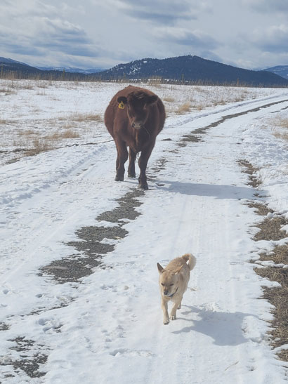 |
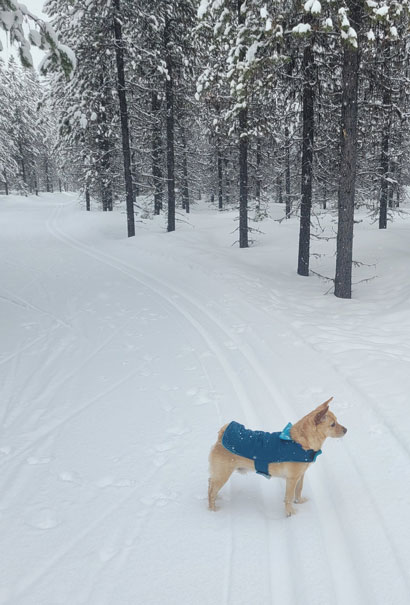 |
| The steers are super curious and Buddy is extremely nervous about being the object of their attention, but he tries to play it cool. |
He & I on yet another cross-country skiing trip at Dog Creek Nordic Center. |
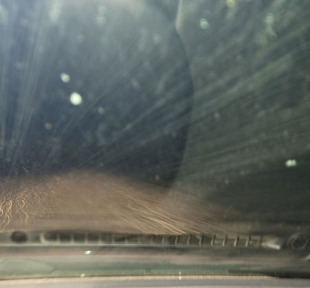 |
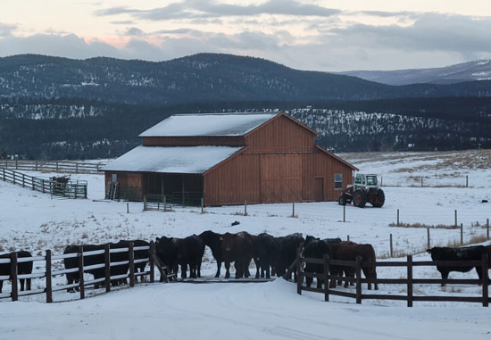 |
| Driving home from a quilting meeting in Kalispell one night, I experienced
the worst driving conditions I've ever seen. Thank goodness for rumble strips, that was all that kept me on my part of the road. |
I looked out one morning to see the steers seeming to plot an incursion over the cattle guard. |
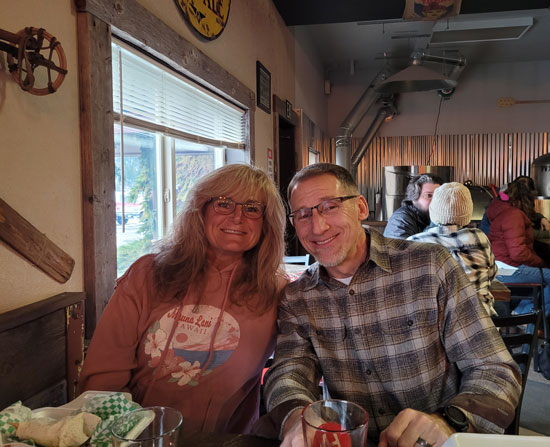 |
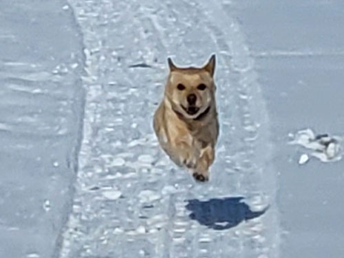 |
| The Branding Iron Butcher Shop food truck has started to park at the
Branding Iron Brewery on weekends. Since Eric was in Oklahoma, our friends and neighbors the Goods and I went there on two occasions to enjoy the great food and local brew. They are so fun! |
Speaking of fun - this little guy is having a blast on a rare walk on
a rare sunny day. He's so happy to be free of the house for once! |
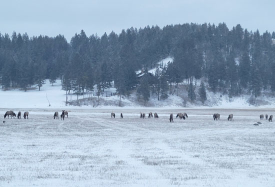 |
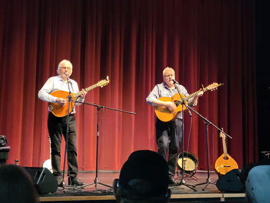 |
| A herd of elk were grazing at the Branding Iron Brewery after my second outing with the Goods. | Another winter concert, these guys were wonderful. One is Irish and
the other Scottish, they played all kinds of folk songs from both countries and more. |
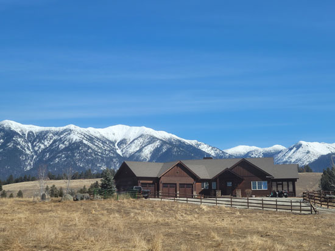 |
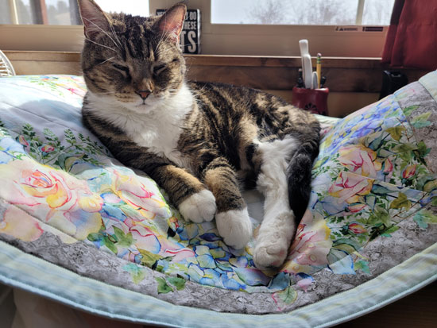 |
| Blue skies! Always photo-worthy in winter. | I was trying to update the inventory of my Etsy shop, but Lily thought I was building a cat bed. |
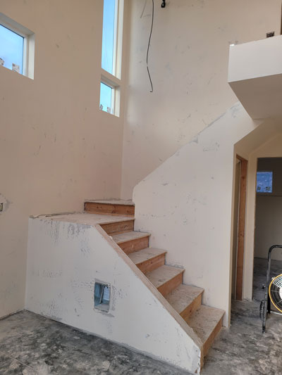 |
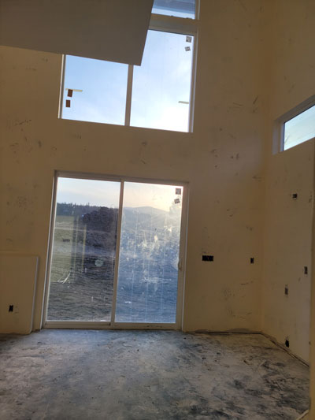 |
| Lodge Bluff Homes, the progress continues. Here is after the drywall texture is done. | Ready for paint! |
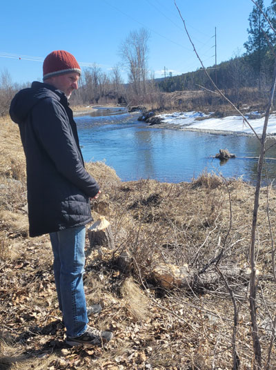 When the sun shines in winter, you have to mark it with an outing of |
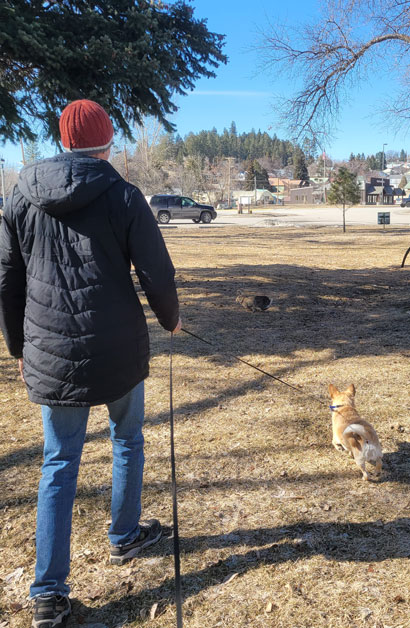 |
| Rabbit!! If it wasn't for that leash, he'd have had him for sure. (NOT!) | |
|
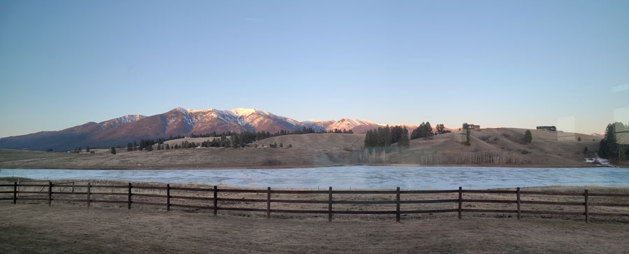 Panoramic shot from the living room window one evening |
|
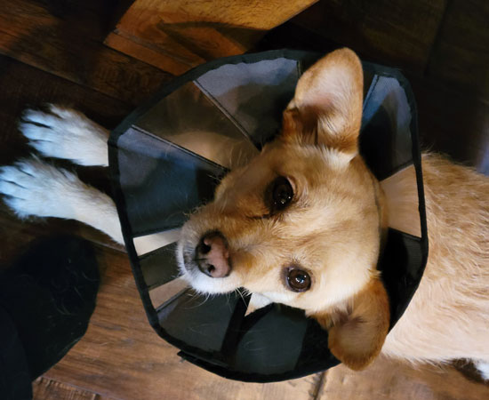 Buddy hurt his eye and so we put him in a cone of shame for a day in
hopes of it healing faster. |
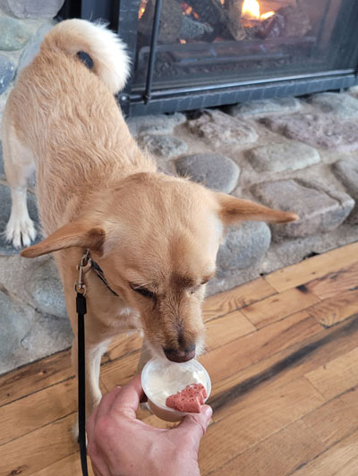 |
| One of 2,000 Pup Cups enjoyed by Buddy at The Gathering Place Coffee Shop. | |
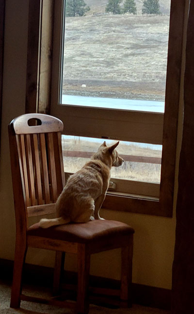 |
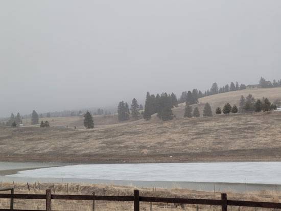 Typical day in March in NW Montana. But the ice is melting on the lake, so that's worth celebrating! |
| If you can't go outside, at least you can look outside. | |
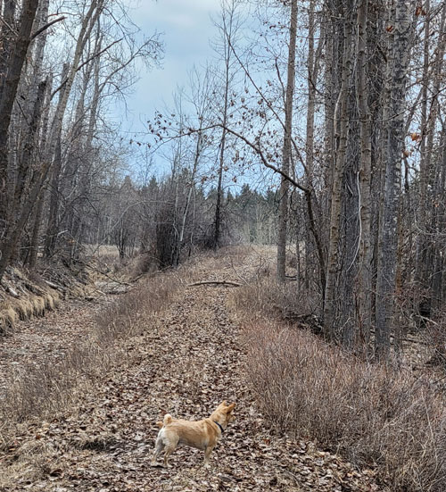 |
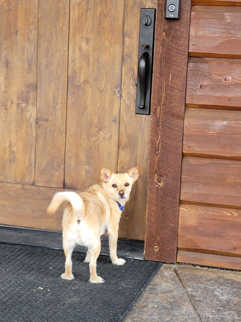 |
| On a walk in our woods with Buddy, we have to build his stamina back up to prepare for summer. | Someone shot a gun while we were out, so he was very anxious to get back inside. |
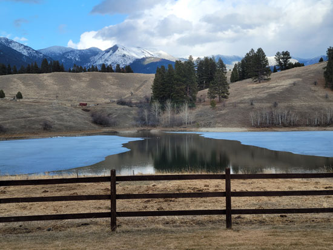 That morning there had been a crack about 6" wide, by the evening
it turned into this. |
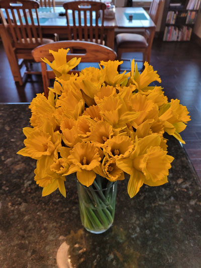 |
| My parents sent me this lovely bouquet for Easter. It was like having the actual sun on my countertop, so beautiful! |
|
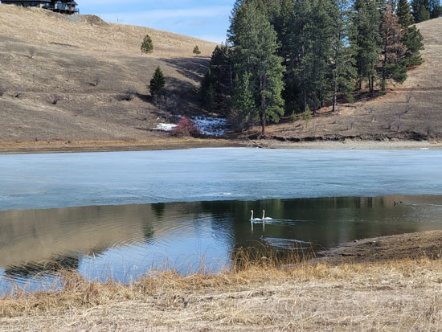 Now that the ice has cleared, birds are showing up. Here are some beautiful swans. |
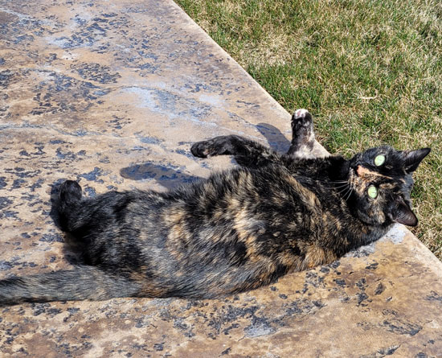 |
| A nice day meant all the pets got a field trip outside. Feisty enjoyed it the most. | |
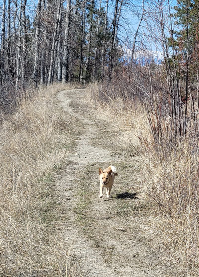 |
|
| When he's been lollygagging he has this guilty trot he does, this is it! | |